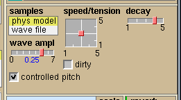
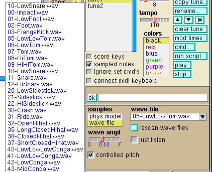
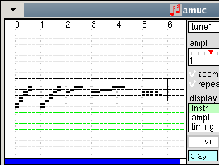
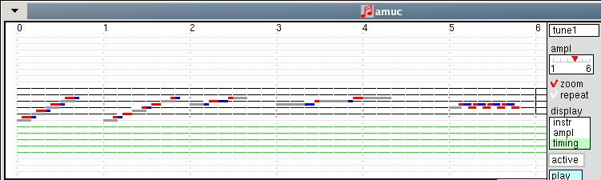
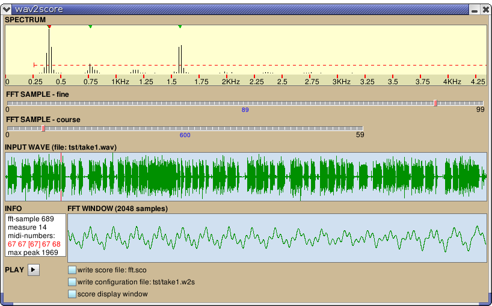
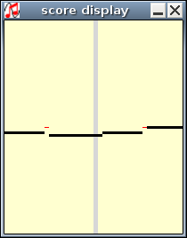
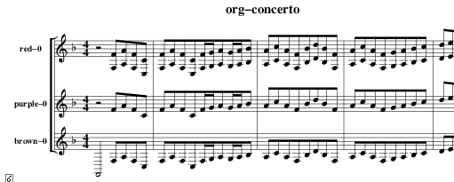
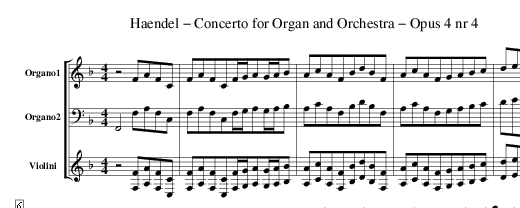

amuc dance.sco(This file is located in the src directory)
A score file contains short tunes that are to be combined into a complete piece of music. This combining is controlled by a script file which is a normal text file. After the script file dance.scr has been read the screen may look as follows.
After clicking the play button at the right, you can listen to this cheerful song.
It is also possible to read the script file directly, when no score file is loaded yet. If script file dance.scr is read, then first dance.sco will be loaded if it exists. The script file can be created or modified by the built-in editor, or by an external editor.
If Amuc is started for the first time, then a default configuration file .amucrc is written to your HOME directory. The items in this file are hopefully self-explaining. A.o. you can choose where the sound must go: directly to your sound card using Alsa, or via Jack (the Jack Audio Connection Kit). In the latter case, Amuc tries to connect to the standard Alsa input ports: playback_1 and playback_2. You could choose other ports, which is easily accomplished when using a Jack GUI-backend tool (e.g. qjackctl).
Amuc is quite different from other music software. It is especially focused on composing music, which is a very difficult but also rewarding endeavor. The tool tries to place as little hurdles as possible on the user's road. In general it's a good idea to run Amuc from the command line, and not by double-clicking its icon. For bigger projects it is convenient to first collect all relevant files in one directory and run Amuc from there. To create complicated pieces, or to create scores for the individual musicians of an orchestra, you should know how to use a text editor and how to write shell scripts.
The entering of new tunes is done on normal 5-bar staffs (treble and bass clef) in one of the 2 panels at the left. There are 2 kinds of instruments: sampled instruments and instruments whose waveforms are generated real-time. Fore each kind there is choice between 6 instruments, indicated by a color. All real-time instruments can be replaced by a Moog-like monophonic synthesizer. The sound of each instrument can be modified via its own control panel, that will appear when the appropriate color is selected.
The sampled instruments are created with a technique called "physical modeling", or alternativily their waveforms are read from files in WAVE format. In this case each sampled instrument can be tied to each of the available wave files. The pitch of sampled instruments can be controlled by the vertical position of their notes if a checkbox controlled pitch is enabled.
The characteristics of a real-time instrument are controlled by algorithms. So if you know how to program, then the creation of different sounds belongs to the possibilities. How Amuc is controlled will be explained in the next chapter via the panels and widgets of the graphical user interface.
Amuc can be run with several options. Run 'amuc -h'
to get a complete list, or run 'man amuc'.
The GUI panels
The 2 score panels
Here you see a 5-bar staff in treble clef (the black lines) and in bass clef
(the green lines). Note units can be entered by clicking the left mouse button.
If a note is already present, then it will be erased, unless key N is pressed.
In this case multiple notes can be inserted at the same location, they will
be rendered in a grey color.
If key N is not used, then long notes can be entered or erased by dragging the mouse.
The color of the notes is determined by the color control panel (middle of the window).
If the middle mouse button is used, then the note will be staccato (indicated by a shortened display of the note). If the note is staccato already it will be turned back to normal.
Middle-C, which is a note on the line between the black and the green score lines, will have a frequency of 130.8Hz (which is half of the usual value 261.8Hz).
Notes from sampled instruments are created if the sampled notes checkbox is enabled. The control panel for all sampled instruments is the same: 2 two-dimensional sliders controlling values called speed, tension, decay and amplitude. The default values for these instruments are different however. Sampled notes are indicated by colored crosses. Their vertical position in the score panel is relevant only if checkbox controlled pitch is enabled.
The control panel for a sampled instrument contains a choice box. If the wave file item is choosen, then the waveforms for the sampled sounds are read from files. A menu widget is provided, if clicked then the available sampled instruments will be listed. The names of wave files in the current directory are rendered in black, the files in /usr/share/amuc/samples in blue. For details see chapter Sampled Instruments. Notice that these files are read if the score at the bottom is played and they are needed for the first time. So if only tunes with real-time instruments are played then the wave files will not be loaded.
Clicking the right mouse button will create a vertical 'end-of-tune' line. This will be useful when several tunes are combined later on, because then no timing information will have to be specified in the script file. Also, this way the length of a tune can be increased beyond its initial value. To accomplish this, click with the right mouse button in the white space at the right from the score lines.
One score panel can be the active score, which is controlled by the active button. If this button is clicked once more, then none of the scores will be active. The status of the active button is relevant for several different operations, thus it can be harmful if it is enabled inadvertantly. Therefore it is always reset after being used. If you don't want this, you can keep the status by pressing the shift key before clicking a button or slider.
The tune in the score is sounded by clicking the play button of the score panel. It can be stopped by the stop at the right of the window. It is possible to indicate the starting and stopping times of the playback. This is done by clicking the left and right mouse buttons respectivily, above the highest score line, and is indicated by small red triangles. They can be undone by clicking at the same point a 2nd time, or by clicking the middle mouse button.
After enabling checkbox zoom a zoomed-out view of the tune will appear. In this window small note delays can be introduced. See the zoom window chapter.
If the repeat checkbox is enabled, the tune until the 'end-of-tune' line will be repeated. This also works between the red triangle start/stop signs. The repeating can be stopped with the stop button.
If the checkbox play 1 color is enabled, then a single instrument will sound: the one that has been choosen in the panel labeled colors (middle right).
With the choice button called display the appearance of the display can be modified. Normally the mode instrument is enabled. Other display modes:
Choice button gr# (which means 'group number') is relevant for MIDI output and for generated human-readable scores (in postscript format). A tune can belong to 1 of 3 'groups'. Each group can be mapped to different MIDI instruments or to different staves in the postscript picture. See Export MIDI file or Export postscript file.
Usually, musical scores are preceeded by 'flat' or 'sharp' key signatures, depending on the key in which the piece is written. The key signatures are drawn in front of the score lines, see chapter Scales and score keys. If a note is entered on such a line it will be raised or lowered one semitone by default.
The color of a new entered note is determined by the colors panel.
The action performed by clicking or dragging the left mouse button can be modified
by the buttons at the left side, see the next chapter.
Score edit buttons
The blue buttons have immediate effect. From the choice buttons, none or one
can be enabled at the same time. A choice button can be reset by clicking it again.
Most buttons have key equivalents (indicated by an underscore in the button label),
which you normally will be using, however using the buttons you can work single-handed.
The key must be pressed before clicking the mouse.
Clicking outside a note will select all note parts under and above the clicked location. By dragging the mouse an area of selected notes will be created.
Selected note parts can be moved, copied, deleted or re-colored. Notice that the select button stays active after the mouse button has been released, whereas the other buttens will be reset in this case.
The operation of other buttons on selected mutiple notes is different if sel color has been used instead of select. In the first case, e.g. clicking the delete button would only remove from the multiple note the selected color. In the second case the complete multiple note would be removed.
If notes are moved in vertical direction, then their sign (flat or sharp) is not retained, it will instead be equal to the key signature of the new score line. Notice that if a selected note is moved to a position beneath or above the valid score area, it will be lost.
When clicking in a score different from the score where the selected notes are, then initially the left-most moved note will appear at the mouse position in the new score.
If the K key is pressed before releasing the mouse button, then the moving will not occur (K means 'keep').
When clicking in a score different from the score where the selected notes are, then initially the left-most copied note will be at the mouse position.
Again, if the K key is pressed before releasing the mouse button, then the copying will not occur.
Notice that the portando data are stored in the first note, which will be apparent when this one is moved or deleted. If 2 notes are in portando, then during playback the decay part of the first and the attack part of the second are skipped. The horizontal distance (in note units) between the first and second note can be between 0 and 15, the vertical distance between -31 and +31.
Notice that normal notes that differ one semitone are treated specially. For instance a B note that is made sharp will turn into a C note.
The meter of some tune also can have a value different from the default meter. To accomplish this first make one score panel active before modifying the meter slider. The complete score always has the default meter.
| Instrument | |
| black brown | An FM instrument, like the Yamaha DX7. The basic sinus signal can be FM modulated with 0.5 to 8 times the basic frequency. The modulation index can be choosen between 0 and 10. Both frequency and index are controlled with a two-dimensional slider. The modulation index can be either an integer or a value of 0.5 (which yields a fundamental frequency 1 octave lower). Detuning the modulation frequency can be done with the detune slider. The modulation index can itself be modulated with a low-frequency signal, with controllable amount and frequency. A wide range of sounds is provided, from mellow to pregnant. |
| red | The waveform is a repeating pattern consisting of 2, 3 or 5 cycles (with varying frequency) of a sinus wave. This yields a frequency spectrum with a wide range of upper harmonics. The number of cycles as well as the frequency variation within one cycle are controlled with 2 two-dimensional sliders labeled diff/nrsin, one for the startup, one for the sustain part of a note. With slider start-amp the amplitude at startup is controlled. With radio-button tone a doubled frequency can be mixed in, which enhances audibility of low-frequency notes. This instrument can sound like a rough piano, a guitar or a bass-guitar. |
| green | Two waveforms as used for the red instrument are combined. The ratio of their frequencies can be choosen between 1 and 3. A chorus effect is created by a controllable detuning of the 2 waves. Beautiful sound. |
| blue | Basicly a pulse. If the chorus checkbox is enabled, then a second pulse with a slightly different frequency is added with the opposite amplitude. The 2 signals cannot fully cancel each other, because they are asymmetric. With the rich tone checkbox, pulses with 2 and 3 times the basic frequency are added. Also a slider lowpass is provided. At higher values of this control it does not act like a real lowpass filter, more like a formant shaper. A limit on the duration of a note can be set with slider dur limit (dur = duration), which is useful if long notes have been generated from MIDI input. This instrument can have a pure, floating quality, or a full rich sound like a piano if chorus as well as rich tone are enabled. Notice that if the duration limit is different from zero, then staccato notes will sound like normal notes. |
| purple | An additive synthesis instrument, like a Hammond organ. The sound is the sum of sinus waves with a frequency of 1, 2, 3, 6 or 9 times the fundamental, with separate controls for these harmonics during startup and sustain. Duration of the startup is controllable. A slight distorsion in the time domain can be added, which also can be modulated with a low frequency. This instrument can sound very nice and mellow, or somewhat harsh. |
Instruments can act 2 ways: with their "native" sound, or as a monophonic synthesizer. Their control panel contains a box with choice native or msynth. If the latter is enabled then a control panel with a lot of sliders pops up. See chapter Mono Synthesizer.
All instruments have stereo sound. The stereo effect is created by delaying one channel with 2 msec and decreasing its amplitude to 50%. Panning between left and right channels can be controlled by script command pan:LL, pan:L, etc.
Each instrument can sound like one of the other instruments, using a button labeled eq?.
This is indicated by a colored line at the left side of the control panel. Repeated clicking
has the effect of cycling through the 6 different instrument colors. Notice that the amplitude
control of an instrument is done by its own slider.
Reverb
One instrument can have reverberation. The reverb panel
contains a button instr? that when clicked cycles through the
6 instrument colors. The horizontal value of the slider controls the amount of reverberation plus the "wetness",
which is the ratio of direct sound and delayed sound. The displayed value e.g. might be
'0.5 long', which means: the ratio of the delayed and the direct sound is 1 to 1, the delay is long.
If the vertical value of the slider is set to 1 or 2, then a phasing effect will be added.
Sounds with a very short attack time don't sound good with reverberation.
Sampled instruments
If the sampled notes checkbox is enabled, then a control panel of a sampled instrument
will appear. There are 2 modes, which can be choosen with the samples choice box.
In the first mode, the sounds are synthesized via a technique called "physical
modeling". The models are relatively simple, so the modification of parameters
can be performed in realtime.
In the second mode, sounds are read from files in WAVE format. The wave files are read from the current directory or from /usr/share/amuc/samples. This search path can be altered by a script command sample-dir:, see the Scripts chapter. A wave file name must start with a number, and end with the extension '.wav'. The number of channels must be 1 (mono), the sampling rate must be 44100 Hz.
Of course you can use other files if you don't like the ones provided. All kind of sounds can be used, for instance samples from real instruments or from human voices.
The control panels look as follows:
| Physical model: | Wave file: | |
|  |
 |
In wave file mode, clicking the arrow-button will open a menu with wave file names. The text is colored: black when found in the current directory, blue when found in /usr/share/amuc/samples, else green. Notice that the list of wave files is stored internally when they are needed for the first time, and that this list is not refreshed automatically after a modification. That is what button rescan wave files is for.
Sampled sounds can be heard 2 ways, dependent of the status of checkbox controlled pitch. If this checkbox is off, then the pitch of the sound is independent of the score line where the note was drawn. If the checkbox is enabled, then the pitch is dependent of the score line. The reference line, where the pitch is the original one, is middle-C (which is the score line between the upper and the lower staff). Only the sampling speed is modified, so increasing pitch yields a shorter duration.
If checkbox just listen is enabled, then you will hear the sound from the wave file
when clicking its name. The sound of the instrument will not be modified however, and the menu will
stay on-screen.
Central checkboxes and buttons
Their functions are described elsewere. A short summary:
The menu panel
This contains 3 menus.
After clicking the small ok button or hitting the enter key, the file will be read. A list of available .sco files will appear if the black triangle is clicked. This list will disappear if an item is clicked, or if the black triangle is clicked a 2nd time.
Score files are conventionally saved with extension .sco. After loading a score file the tunes that are contained in the file will be listed in the tunes panel.
A score file is more or less human readable. Modifications like renaming or copying of the tunes could be done with a text editor. Also other modifications like e.g. re-coloring of all notes could be done, as each parameter has a unique letter code. Tip: in your text editor disenable line wrapping.
Multiple commands can be given by separating them with a semicolon. Don't forget the time: parameter after add and set commands. Because the score at the bottom might be modified by an entered command, it will always be redrawn after a command. Also the actions that are valid at time 0 will be executed.
If the command in the dialog panel is still valid, then clicking the ok button again will re-execute it.
Operations that are not provided by the available buttons sometimes can be performed by giving an appropriate command. After reading the script syntax chapter the following examples will be clear.
Of course, commands like these also could be typed in the script window, possibly followed by an exit statement, which will interrupt the script execution.
The positions of the starting and stopping marks in the complete score control the operation. The time:n parameter of set and add commands will be modified, as follows:
In case of add and take commands: All times greater or equal than the starting mark will be decreased with an amount equal to the distance between the stopping and starting mark. All tunes starting between the stopping and starting mark will be removed.
Notice that if only relative timing (e.g. rt:-1) has been used, then there are no time: parameters, so mod times will have no effect.
Starting and stopping times can be controlled by clicking in the upper part of the score, using the left or the right mouse button. Small red triangles then will appear.
While playing, sliders and checkboxes will be redrawn such that they display their current value. Notice that set commands in scripts are only executed when the complete score is played. If a tune in a score panel is played, then the control values keep their current values, which can be modified manually if needed.
Oscilloscope
This panel shows the contents of an internal audio buffer. Slider scale
controls the time scale of the displayed waveform. At low settings the
precize waveforms can be inspected, at higher settings the envelope of
the audio signals will be visible.
Script editor
The script editor is located at the right bottom of the window. Its
dimensions are increased by increasing the window size:
At the left side there is an area containing numbers, which indicate the number of the measures where add commands have inserted a tune.
The script editor is a simple text editor, where the left mouse button
activates the text cursor, and the following keys behave as expected:
arrow up, down,Text, selected in other windows can be pasted at the location of the cursor, using the middle mouse button. Set commands can be generated automatically. First select a color in the color panel, then press ctrl-S. A complete set command will be written to the line where the text cursor is located (if this line is empty) or to the next line (if it's not empty). This also works if the sampled notes checkbox is enabled. The short form of the set options is used (e.g. "stw" instead of "start-wave").
arrow left, right, (may shift the current line, if it is too long for the window)
backspace,
return,
ctrl-U (clears the current line).
The script is executed with the run script button,
and saved with the save script button. If the capabilities of the built-in
editor are too limited, you better use a normal editor instead, and click the
read script... button afterwards.
The complete score
The score at the bottom is assembled from the available tunes. As mentioned
before, this is controlled by the script. The syntax is explained
in chapter Scripts.
At the bottom of the score the names of the tunes that were used as building blocks are shown. Clicking on the play button (right middle) will start the playing, during which the appearance of all controls is updated such that they show their current value.
This score cannot be modified with the mouse, only starting and stopping times of the playback can be entered. This is done by clicking the left and right mouse buttons respectivily in the upper area of the score, and is indicated by small red triangles. They can be undone by clicking at the same point a 2nd time, or by clicking the middle mouse button.
Notice that always before playing all script set commands are executed, also when the playing starts not at zero. However, when the ignore set cmd's checkbox is enabled, then the set commands will not be executed. This is handy if you want to experiment with different instrument settings.
The note info button works also for this score.
Zoomed-out score view
If the checkbox labeled zoom is enabled, then the notes in the score panel
will be enlarged 3 times in the horizontal
direction. The timing of the individual notes can be modified such that at the beginning
of a note an extra delay is introduced, as well as at the end of a note.
In the following screenshots you can see:
No zoom, normal display:

The same notes, zoomed, display mode = timing:

Editing the start end the end of notes in the zoomed window is simple. First set the
display mode to timing. Then, clicking on the start of a
note with the left mouse button will introduce a delay of 1, 2, 0, ... times
1/3 note unit. Clicking with the right button has the same effect at the end
of the note. Clicking somewhere in the middle of a long note has a visible
but not an audible effect.
Scales and score keys
If the score keys button is clicked then a window pops up:
The keys are listed in the leftside panel. The columns denote respectively: the major keys, the minor keys, the number of flats or sharps, and the sequence number of the notes relative to base tone (the tonic). This last column is updated if a new base tone is choosen.
The circle-of-fifths figure at the bottom indicates with a red dot the choosen key.
If the set key button is clicked, then key signatures will be drawn in the active score panel (the score panel with button active enabled). So if e.g. the base tone F is selected, then a flat signature will appear in front of all score lines for note B. When clicking the force key button, all notes in the active score panel will get the key signature of their score line.
At the right side a list is shown of a collection of scales and chords. If an item is clicked, then in the active score (provided it is set to the piano-key mode), the lines belonging to the particular scale or chord are drawn in grey, the tonic in blue. The lines not belonging to the scale or chord are empty.
The list items appear in 3 different colors:
If the same score is assigned to both score panels, then the first could display a scale and the other a chord. Then you can verify wether the combination conforms to the rules of jazz or classic harmony.
The scales and chords are specified in a file chords-and-scales, which should be present in the current directory or in /usr/share/amuc. This file looks like:
"white keys" 0,2,4,5,7,9,11 no "major" 0,2,4,5,7,9,11 scale "minor" 0,2,3,5,7,9,10 scale "blues scale" 0,3,5,6,7,10 scale "major pentatonic" 0,2,4,7,9 scale "minor pentatonic" 0,3,5,7,10 scale "diminished" 0,1,3,4,6,7,9,10 scale "whole tone" 0,2,4,6,8,10 scale "C7 (dominant 7th)" 0,4,7,10 chord "C- (minor 7th)" 0,3,7,10 chord "C/0 (half-diminished)" 0,3,6,10 chord "Co (diminished)" 0,3,6,9 chord "C7sus4 (suspended 4th)" 0,5,7,10 chord |
The 2nd column indicates for each note the number of semitones from the root. The last column can contain scale (dependent on score key, displayed in red), chord (dependent on selected key in keys window, displayed in blue), or no (constant, displayed in black).
Some chords span more then 1 octave, e.g. the C11 chord. These will be displayed slightly different: one base line in blue, the lines of the 1st octave in black and the lines in the 2nd octave in green. If the chord name is clicked a second time, then the displayed lines will shift over 1 octave.
Good chord and scale combinations can be found in books. Here is useful table for jazz and pop music. The following screenshot shows the result of an attempt to find good chords with a melody. The melody (upper score panel) is in Bb minor. According to the table this could be combined with Bbmaj7 chords. This was done in the lower panel, and indeed: together they sound good. (Of course, harmonizing a melody involves much more then conforming to a table!)
Export WAVE file
After selecting menu item Import/Export -> save as WAVE..., the dialog panel will ask for
a file name. After this, a stereo WAVE file will be generated.
The file is located in the current directory.
Export MIDI file
After selecting menu item Import/Export -> save as midi...,
the dialog panel will ask for a file name. Then a MIDI file will be generated in the current directory.
The default mapping for real-time instruments is as follows:
The default mapping for sampled instruments is:
black : MIDI instrument 6, electric piano 2 red : MIDI instrument 25, guitar green : MIDI instrument 22, accordion blue : MIDI instrument 1, piano purple : MIDI instrument 17, drawbar organ brown : MIDI instrument 8, clavinet
The mapping can be overruled by script commands, using e.g. out-par midi-instr-0:. These commands can be timed, so the instrument mapping can change at any choosen moment. See chapter Scripts.
black : MIDI percussion instrument 36, bass drum red : MIDI percussion instrument 47, low-mid tom green : MIDI percussion instrument 38, acoustic snare blue : MIDI percussion instrument 46, open hi-hat brown : MIDI percussion instrument 42, closed hi-hat purple : MIDI percussion instrument 62, mute high conga
The created MIDI file is a General MIDI (GM) file, format 1 (which means: one track
for each channel). The channels are named or renamed according to their MIDI instrument.
Export Postscript file
Human-readable scores can be generated by selecting menu item Import/Export -> save as postscript....
In the following picture the rendering of a postscript file by Evince is shown.
The depicted page is from a piece written for big band.
The generated scores are not perfect. Specifically, triplets are not rendered as they should: marked with -3-. The reason is that in Amuc no syntax is available to indicate which notes belong to a triplet.
Percussion instruments get their own stave, they are rendered as 1/8 notes.
The translation to postscript goes via a format called ABC. More information is available at the ABC homepage: http://www.walshaw.plus.com/abc/
The code in ABC format, not translated to postscript, also can be written to a file.
This happens if you specify a file name ending with .abc.
If needed you can modify this file (e.g. by modifying the clef or
the unit note length, or by adding triplets),
and then translate it to postscript by program Abcm2ps,
available in directory src-abcm2ps.
For further details see chapter
Abcm2ps
Read MIDI file
An awful lot of free MIDI files are available on the internet. You can import
them in Amuc, learn from them and modify them.
If, after selecting menu item Import/Export -> read MIDI file... and hitting ok a MIDI file is read for the first time, then a file with the same base name and extension .gm-map will be created. This file will control the mapping from MIDI instruments to Amuc instruments.
A mapping file might look as follows:
set format:2 key:C acc:flat channel=1 time=0 "Soprano Sax" (6) black midi 0 channel=1 time=72 "Electric Piano 2" (6) black midi 0 channel=2 time=12 "Acoustic Grand Piano" (1) black midi 0 channel=3 time=24 "Reed Organ" (21) black midi 0 channel=4 time=36 "Drawbar Organ" (17) black midi 0 channel=10 time=0 PERCUSSION midi 0 |
The first line is for setting some parameters.
format:2 the current format of this file.
key:C sets the key signature for the scores, the C
can be replaced by another key.
acc:flat controls how MIDI notes are interpreted,
e.g. a MIDI note number 61 could be a C# or a Db. This acc is short for 'accidental'.
It can have value sharp or flat.
There are 2 optional parameters:
shift:n to shift all notes n semi-tones.
tinc:n (short for 'time increase') to increment note length's with a factor n.
This may be a real number. The default is 1.
After the first line, the columns have the following meaning:
set format:2 key:F acc:flat channel=1 time=0 "Soprano Sax" (6) black saxes 0 channel=1 time=72 "Electric Piano 2" (6) blue piano 0 channel=2 time=12 "Acoustic Grand Piano" (1) black piano 0 channel=3 time=24 "Acoustic Bass" (33) red bass 0 +12 channel=4 time=36 "Drawbar Organ" (17) purple organ 0 channel=10 time=0 PERCUSSION drums 0 |
The mapping of MIDI percussion instruments is fixed. You might alter it by modifying file midi-in.cpp in the source code and recompile.
In standard GM files the percussion instruments are assigned to channel 10.
An extra line in the mapping file will appear with instrument name PERCUSSION,
even if no explicit assignment to this channel is present in the MIDI file.
Mono Synthesizer
Instruments can double as a traditional mono synthesizer. If choice
msynth in an instrument control panel is clicked, then the following window
will appear.
The mono synthesizer has been carefully crafted to provide good and versatile sounds whose control is not too complicated. Conceptually the different parts work together as follows: the output of 2 oscillators, VCO1 and VCO2, and a pink noise source are added in MIXER. The resulting signal is controlled by an envelope generator, EG1, and by a bandpass/lowpass/highpass filter, VCF. A low-frequency oscillator, LFO, and a 2nd envelope generator, EG2 can modulate the amplitude, the pitch and the filter cutoff. A third oscillator, VCO3, can modulate the amplitude and the filter cutoff.
A short listing of the different parts:
A special effect is created if the trigger VCO2 checkbox is enabled. Then VCO1 will trigger VCO2 at each cycle, so if you listen to VCO2, it will seem to have the frequency of VCO1. At each cycle of VCO1 one or more cycles of VCO2 will be heared, dependent on the pitch mult. slider of VCO2, which will create a formant peak in the sound spectrum.
Two extra kinds of wave are provided: white noise, and a combination of 3 sinusoids called flutter. Their frequency range can be choosen with the frequency slider.
The characteristics of the envelope generators are both displayed. The x-axis of these curves are scaled such that the envelope of EG1 fits more or less inside its window. Between the decay- and the release phase a constant time-interval is inserted, with a grey-colored background.
Because the filter is controlled by many sources, you easily can loose track. Because of this, a small display has been provided. Two black lines show the frequency of VCO1 and VCO2, a red line shows the cutoff frequency of the VCF.
At the left bottom corner there is a button labeled eq?. If it is clicked then a line is drawn at the left side with one of the instrument colors. This means that this synthesizer will use the patch of that other synthesizer.
Notice the way that the synthesizer control window is displayed. If a different instrument is choosen in the color panel and the instrument happens to be a synthesizer, this is only visible by the fact that the msynth label in the choice box is enabled, the synthesizer control window is not visible however. This is done because this window is rather intrusive. You can make it visible by clicking the msynth label.
The control string for a mono synthesizer is rather long, e.g.
F5,00201,702,300,5040500,050,0aa70,0,088950,92010,8
so you will create it inside a script
using the ctrl-S key. Still for small modifications it is handy to set the parameters manually.
The numbers reflect the positions of sliders, choice- and check boxes. The fields are ordered
as follows:
| field nr. | 1 | 2 | 3 | 4 | 5 | 6 | 7 | 8 | 9 | 10 | |
| name | format | VCO1 | VCO2 | VCO3 | LFO | MIXER | EG1 | PORTAMENTO | EG2 | VCF | AMPLITUDE |
| example | F5, | 00201, | 702, | 300, | 5040500, | 050, | 0aa70, | 0, | 088950, | 92010, | 8 |
| take tune | Clear the internal score buffer, then copy tune tune to it. |
| take-nc tune | Copy tune tune to the internal buffer without first clearing it. |
| add | Add the buffer contents to the complete score. |
| add tune | Add tune tune directly to the complete score. |
| put tune | If tune is found in the list of tunes, then copy the contents of the buffer to this tune. If tune is not found, then first create it. |
| set | Set parameters. |
| out-par | Parameters for output (postscript, MIDI). |
| sample-dir:d1,d2,... | Specifies the directories where sample wave files are located. The current directory is as usual '.', the standard Amuc data directory is /usr/share/amuc. |
| extended-syntax | Enable extra (undocumented) features: amplitude and "eq?" settings can be controlled separately for each instrument group. |
| exit | Skip rest of script. |
Most basic commands can have parameters. The add, take and take-nc commands take the same parameters, as follows:
| time:number | Add at a certain time. number has one of 2 forms: n - indicates the measure number n.m - e.g. 3.2 indicates the 2nd note-unit in measure number 3. Multiple times are also supported, e.g. time:2.4,9 means that the tune will be added at the start of measures 2.4 and 9. If no time:n command is given, then the current time is supposed, which is defined as the latest stopping time of all tunes added until now. |
| rt:number | Relative time: add with respect to the current time. |
| shift:n | Shift all notes n semitones up (if n is positive) or down (if n is negative). If the score is in a key containing flats, then accidentals (the black keys of a piano) will be flats. If the score is in a key containing sharps, then they will be sharps. |
| raise:n | Shift all notes n lines up or down. The sign of the notes is not copied, like when moving selected notes with the mouse. |
| from:n to:m | Take an interval. n and m are numbers like in the time: parameter. |
| color:s | Recolor all copied notes. s = black, red, green, blue, brown, purple. |
The out-par command specifies parameters used for postscript and MIDI output.
|
| Valid values | |
| time:number | The midi-instr and midi-perc parameters will be effective at the specified time, see the set command. | |
| midi-instr-g:n1,n2,n3,n4,n5 | Set mapping from instruments (black, red, blue, green, purple, brown) to midi instruments.
A value 0 means: no mapping. g is the group number of a score, as choosen by the gr# button in a score panel. The default mapping is midi-instr-0:6,25,21,1,5,17. | 0 ≤ g ≤ 2 1 ≤ n1 ≤ 128, etc. (according to the GM standard) |
| midi-perc-g:n1,n2,n3,n4,n5 | Set mapping from sampled instruments (black, red, blue, green, purple, brown) to midi instruments
at midi channel 10. A value 0 means: no mapping. The default mapping is midi-perc-0:36,47,38,46,42,62 | 0 ≤ g ≤ 2 35 ≤ n1 ≤ 81, etc. (according to the GM standard) |
| key:k | Set the key for the complete score. Used for postcript output. The k parameter should be one of the keys as shown in the score keys panel. | k = C, c, ... |
| nupq:n | Set note-units-per-quarter-note. Used for postcript- and for MIDI output. Default value: 4. | |
| transp-g:n1,n2,n3,n4,n5,n6 | Some real instruments are sounding lower or higher then expected. E.g. when ad alto saxophone
plays a C then an Bb is heard. The written score for these instruments should thus be
transposed, which can be done with this statement. The value of n1 etc.
is equal to the desired shift in semitones. The key will be modified accordingly. g is the group number of a score, as choosen by the gr# button in a score panel. | 0 ≤ g ≤ 2 -24 ≤ n1 ≤ 24, etc. |
| single-voice | Useful for scores for the individual instruments of an orchestra. This option has the
effect that multi-measure rests are replaced by thick lines plus a number, and that a warning
is issued if an instrument plays not a single tone. Real chords (all
chord tones of equal length) will get only a warning at first occurance. Use this option only to generate an .abc file, then use this file with a customized header as input for the Abcm2ps tool. | |
| abc-header:header-file | The default header statements are replaced by the contents of header-file. See chapter Export postscript file for an example. | |
| annotate:n1,n2,n3,... | Print annotations 'A', 'B', 'C', ... above measures n1, n2, n3, ... | |
The set command can take many parameters. Notice that for the start of tones two different words are used: "attack" specifies the amplitude at the beginning of a tone, "startup" specifies the waveform at the beginning of a tone. In the chapter about script editing was described how to generate set commands automatically.
|
| Valid values for n, m etc. | short form | |||||||||||||
| time:value | Succeeding parameters are valid after this time. value has one of 2 forms: n - indicates the measure number n.m - e.g. 3.2 indicates the 2nd note-unit in measure number 3. This parameter can be given more then once on the same line, the last read value is valid. Multiple times (with comma-separated numbers) are supported. If no time:n parameter is given, then the current time (as used for the add command) is supposed. | value >= 0 | |||||||||||||
| rt:number | Relative time: set with respect to the current time. | ||||||||||||||
| tempo:n | Set the tempo. | n > 10 | |||||||||||||
| Set instrument amplitude in 'nat' mode. | 0 ≤ n ≤ 9 | a: | ||||||||||||
| black wave-ampl:n etc. | Set amplitude of sampled instrument, in both 'phys model' and 'wave file' mode. | 0 ≤ n ≤ 7 | wa: | ||||||||||||
| Set instrument attack. | 0 ≤ n ≤ 5 | at: | ||||||||||||
| Set instrument decay. | 0 ≤ n ≤ 5 | dc: | ||||||||||||
|
red start-wave:n,m red sustain-wave:n,m | Set waveform during startup or sustain. The waveform will consist of m sinuses, which vary in frequency dependent on the value of n (value 1: small difference, tone with a strong formant; 5: big difference, bright sounding tone). | 1 ≤ n ≤ 5 2 ≤ m ≤ 4 | stw: | ||||||||||||
| red tone:n | Set tone (0: clean, 1: 2nd harmonic added). | 0 ≤ n ≤ 1 | |||||||||||||
| red startup:n | Set duration of startup wave. | 0 ≤ n ≤ 5 | su: | ||||||||||||
| red start-amp:n | Set amplitude at startup. n=0 : soft startup n=3 : loud startup | 0 ≤ n ≤ 3 | sa: | ||||||||||||
| green wave1:n,m green wave2:n,m | Set waveforms. The waveform will consist of m sinuses, which vary in frequency dependent on the value of n (value 1: small difference, tone with a strong formant; 5: big difference, bright sounding tone). | 1 ≤ n ≤ 4 2 ≤ m ≤ 4 | w1: w2: | ||||||||||||
| green freq-ratio:n | Set frequency ratio wave2/wave1, between 1 and 3. | 0 ≤ n ≤ 3 | fr: | ||||||||||||
| green chorus:n | Set chorus effect. | 0 ≤ n ≤ 3 | ch: | ||||||||||||
| blue rich:b | Set extra harmonics. | b = on, off | |||||||||||||
| blue chorus:b | Set chorus effect. | b = on, off | ch: | ||||||||||||
| blue lowpass:n | Lowpass filter/formant shaper. n = 0: no filtering, n = 4: strong formants. | 0 ≤ n ≤ 4 | lp: | ||||||||||||
| blue dur-limit:n red dur-limit:n | Limit note duration. n = 0: no limit. n = 1,2,3,4: limit = 1,2,4,8 note units | 0 ≤ n ≤ 4 | dl: | ||||||||||||
|
black fm:n,m brown fm:n,m | Set FM parameters. The actual values for the modulation index and for the ratio modulation/carrier frequency, are as displayed with the fm freq/index slider. | -1 ≤ n ≤ 7 0 ≤ m ≤ 7 | |||||||||||||
|
black modmod:n,m brown modmod:n,m | Modulate the amount of fm modulation with a low frequency signal. The n parameter controls the value, the m parameter the frequency of this signal. | 0 ≤ n ≤ 5 0 ≤ m ≤ 3 | mm: | ||||||||||||
|
black detune:n brown detune:n | Set detuning of modulating frequency. | 0 ≤ n ≤ 5 | dt: | ||||||||||||
| purple start-harm: n1,n2,n3,n4,n5 | Set startup harmonics. | 0 ≤ n1 ≤ 3, etc. | sth: | ||||||||||||
| purple sustain-harm: n1,n2,n3,n4,n5 | Set sustain harmonics. | 0 ≤ n1 ≤ 3, etc. | suh: | ||||||||||||
| purple startup:n | Set startup duration. | 0 ≤ n ≤ 5 | su: | ||||||||||||
| purple sound:n | Set the sound for this instrument: 0: normal, 1:chorus, 2:distorsion, 3: fluctuating distorsion. | 0 ≤ n ≤ 3 | snd: | ||||||||||||
| Turns the instrument into a mono synthesizer. After the F5, header about 40 single-digit numbers must be given. Though it's not impossible to enter these numbers manually, you normally will use the ctrl-S key in the script editor. See chapter Mono Synthesizer for details. | ||||||||||||||
| black pan:s etc. | Set stereo panning of instrument in native mode.
(Note: loc: is similar but obsolete). If s = L or R, then pan = medium, and one channel is attenuated and delayed 2 ms. | s = LL, L, M, R, RR | |||||||||||||
| black sampled-pan:s etc. | Set stereo panning of instrument in sampled mode. (Note: sampled-loc: is similar but obsolete) | s = LL, L, M, R, RR | span: | ||||||||||||
| black reverb:n1,n2 etc. | Set reverb (n1 = 0: no reverb, 4: max reverb) and phasing (n2 = 0: no phasing, n2 = 2: fast phasing). Also works if in mono synthesizer mode. Only 1 instrument can have reverb. | 0 ≤ n1 ≤ 4 0 ≤ n2 ≤ 2 | rev: | ||||||||||||
| black mode:s etc. | mode:msynth - instrument will be a mono synthesizer mode:nat - native instrument | s = msynth, native (or: m, n) | m: | ||||||||||||
| black eq:s etc. | If in 'nat' mode, play the sound of a different instrument.
NB! The pan: and the ampl: parameters are not affected. (This isn't provided for sampled instruments.) | s = black, red, green, blue, brown, purple | |||||||||||||
| black ms-eq:s etc. | If in 'msynth' mode, use the patch of a different instrument. | s = black, red, green, blue, brown, purple | black phys-mod:n1,n2,n3,n4 etc. | Set sampled instrument sound in 'phys model' mode. The values are: speed, tension, decay, distorsion on/off |
1 ≤ n1 ≤ 5 1 ≤ n2 ≤ 5 1 ≤ n3 ≤ 5 0 ≤ n4 ≤ 1 | phm: | |||||||||
| black wavefile:n etc. | Set sampled instrument in 'wave file' mode. Wave files should start with a number. The n
parameter specifies this number. Notice that after this command, both time stretch and pitch shift will be reset to 0. | wf: | |||||||||||||
| black time-stretch:n etc. | Set time stretching of sampled instrument (-3: 50%, 3: 200%). | -3 ≤ n ≤ 3 | <>ts: | ||||||||||||
| black pitch-shift:n etc. | Set pitch shift of sampled instrument, in semitones. | -12 ≤ n ≤ 12 | ps: | ||||||||||||
| black ctr-pitch:n etc. | Set pitch control of sampled instrument, in both 'phys model' and 'wave file' mode. | n = on, off | cpit: | ||||||||||||
The colors in statements after a set need to be mentioned only once per line, they stay valid for the rest of the line.
Notice the different semantics of the time:n parameter. If it follows an add, take or take-nc command, it is valid for the whole line; if it follows a set command, it is valid for the statements after it.
The options in the above table are in "long" format. Also a "short" format is available, e.g. stw: instead of start-wave:. The short format is used when the set command has been generated automatically (by pressing ctrl-S in the script edit window).
The pan: and span: parameters have no GUI equivalent.
The eq: parameter is useful to quickly investigate the impact of using a different instrument, or for turning 2 or more mono synthesizers into a polyphonic synth. It is also useful for postscript output for an instrument that is played with 2 hands, like a piano. The left and right-hand parts then can be given different colors, and still sound the same.
The characteristics of the "physical modeling" instruments and the synthesizers are set all in one command. This may not be very convenient, the reason is that their complete waveform is calculated in one go.
If tune in the list of basic commands is equal to the name of the complete score, then that score is taken as input. The name of the complete score is equal to the score file name, minus its extension. This way you can easily split the complete score in several big parts, that can be processed once more. As an example, the following could be added to dance.scr:
take dance to:30; put part1 take dance from:30 to:45; put part2 take dance from:45; put part3 |
After saving to another file and removing the original tunes from this file, you have a
restructured and simplified representation of the original dance.sco.
MIDI controllers
Enabling the connect MIDI keyboard checkbox will create the actual connection. If the checkbox turns to the disenabled state immediately, then something has gone wrong and an alert message will appear. If a connection via Jack has been choosen, then don't forget to establish the actual connection, e.g. in the control panel of qjackctl. The MIDI keyboard input for Amuc will show up under the ALSA tab.
The only MIDI codes that are used by the program are note-on and note-off. What you hear while playing is the instrument choosen in the color panel. The timbre and the amplitude can be controlled, not the attack and decay.
You will only hear it if some tune is playing. The reason
for this restriction is that it is hardly useful to enter played notes if you don't listen
to an existing tune or rhythm track at the same moment.
In order to create a tune it is best to first create a small,
rhythmic tune, then click the play button with repeat enabled. Then play what you
want on the MIDI keyboard,
and if you're done, click stop. At that moment a new tune
called 'keyboard' will be added to the list in the tunes panel.
This new tune can be renamed, assigned to a score panel, edited, re-colored, etcetera.
Companion tools
Wav2score - from wave file to score
Pianists who can improvise and want to enter their music into Amuc are lucky: keyboard
instruments usually have a MIDI output. But sax, horn or flute players, what can they do?
It is rather difficult but not impossible to translate recorded waveforms to notes, and
that is what Wav2score is made for. It translates an audio file (WAVE format, 44100Hz
sampling rate, mono or stereo) from one single-voice instrument into a score file to be imported by Amuc.
There it can be post-processed, mapped to different sounds, shifted in frequency or tempo, etcetera.
The translation works as follows. A fast-fourier transform (FFT) is applied to the data from the wave file, in order to get its time-variant frequency spectrum. A FFT needs discrete chunks of data, called FFT data-windows. Short windows yield precision in the time domain but cannot handle low frequencies, so there is always a compromise. Wav2score uses overlapping data-windows, each multiplied with a Hamming window. In case of stereo input, both channels are FFT'ed separately in order to allow phase differences between the channels.
The program can be used with or without a graphical user interface. With a GUI it looks as follows.
 
Without a GUI the input file is handled piece by piece, but with a GUI it is read in its full length and stored in memory. It is shown in the INPUT WAVE panel. Clicking in this panel controls the red line, which marks the beginning of one FFT window, drawn separately in the bottom panel. Also the fine - and course sliders get the right value. The red line and the state of the sliders are always in agreement.
The frequency spectrum of the FFT window is shown in the top panel. The algorithm implemented in Wav2score searches for at most 3 equidistant frequency peaks. If these have been found then colored triangles are drawn above the peaks, and a note is created. The MIDI number of the note is shown in the INFO panel (where middle C = 261.6Hz = midi number 60). The current midi number is shown between square brackets.
You can listen to the wave file, using the PLAY button. The starting point is at the red line. This button becomes a stop button while playing.
The Wav2score GUI is only meant for investigation, the options are set at the command line. However, the frequency as found by the program for each FFT sample can be overruled manually. With the middle mouse button the lowest appropriate spectrum peak in the FFT window can be clicked. Then the program calculates an exact peak location using the 2 neigbouring peaks, and, if succesful, a black triangle will appear above the peak. Also small black triangles will be drawn above every location where harmonics of the fundamental frequency are expected. The list of calculated MIDI numbers in the info panel will be updated.
Clicking the left or right mouse button inside the FFT window you can access the previous or the next FFT sample.
If button score display is clicked, then a small window will show a visual representation of the generated notes. The current fft sample is in the grey area. Unresolved notes are depicted as a red-colored line.
The program is started from the terminal, as follows:
wav2score [options] <wave-file>
The output score file, to be imported by Amuc, is fft.sco. The options:
| -h | Print usage info and exit. |
| -nogui | Use command-line interface. (The old -gui option is deprecated.) |
| -win nr | FFT window = nr samples. Values between 512 and 8192, default: 2048. If the given value is not a power of 2, then internally it is rounded to the next-higher power of 2. Small values yield better time accuracy, bigger values yield enhanced low-frequency resolution. Samples are token at 44100Hz. |
| -min nr | Midi number of lowest fundamental (default: 0). |
| -max nr | Midi number of highest harmonic (default: dependent on -win parameter). |
| -ch R|L | If stereo, then select right or left channel. |
| -c nr | MIDI number for middle-C, default: 48. E.g. -c 36 yields notes 1 octave lower. Notice that also floating values are permitted, e.g. -c 48.5 raises the notes 0.5 semi-tone upwards. (The default value equals 48 because in Amuc middle-C is 130.8Hz). |
| -th nr | Threshold for spectrum peaks, default: 0.2 Use e.g. 0.9 if only the highest spectrum peak should be evaluated. |
| -dur nr | Note duration increment factor, default: 1.0 Use a bigger value if also fast notes must be handled correctly. |
| -es | Use each sample. Samples/note-duration factor such that each valid sample yields 1 note unit. |
| -signs hi|lo | Preference for sharp or flat accidentals in output score file. |
The manually found frequencies can be stored in a configuration file (with
extension .w2s), by clicking the write config file button.
This config file will be read automatically when you process the same wave file
later. You don't have to supply parameters then, because the stored values
in the config file take precedence. If you want to try different values, then
modify them in the config file.
This feature is not available in command-line mode.
Don't expect wonders from Wav2score. For most wave files you will have to try
different values for the -win and -th options. In case of fast notes a longer -dur
value will be needed. In the FFT WINDOW panel 3 or 4 full waves must be visible
in order to get the right frequency.
Usually the generated score file will need heavy editing to be useful, especially
if you only whistled or hummed the tune. Manually inserting frequencies takes a lot
of patience, but is doable. A big data-window size (e.g. -win 8000) means
less work to do.
Abcm2ps - from ABC file to postscript
Also provided is a full-blown translator from files in the ABC format towards
human-readable scores in postscript.
There are thousands of ABC files available on the internet. The nice thing about the
ABC format is that it is user- as well as computer-readable.
To learn more about Abcm2ps you can
visit http://moinejf.free.fr/.
The dimensions of the generated score notes are controlled by a format file. A different format file can be specified by calling Abcm2ps with option -F.
The original Abcm2ps source files were ported to C++ and simplified somewhat. Options can be seen by calling the program with option -h. A couple of format files is provided in the src-abcm2ps directory. The values in file default.fmt are equal to the built-in default values of this Abcm2ps version.
To get an impression of what's possible, we show the rendering of an organ concerto, file org-concerto.scr from the distribution. The start of the generated, unmodified ABC file and its result are as follows:
X:1 T:org-concerto M:4/4 L:1/16 K:F %%staves [(4 5 6) (13 14) 16] V:4 nm="red-0" clef=treble V:13 nm="purple-0" clef=treble V:16 nm="brown-0" clef=treble V:4 [K:F]z8[F2F,2][A2A,2].... |
|  |
After modifying the .abc file we get the following:
X:1 T:Haendel - Concerto for Organ and Orchestra - Opus 4 nr 4 M:4/4 L:1/16 K:F %%staves [(13 14) 16 (4 5 6)] V:4 nm=Violini clef=treble V:13 nm=Organo1 clef=treble V:16 nm=Organo2 clef=bass V:4 [K:F]z8[F2F,2][A2A,2]... |
|  |
A script command single-voice is available, especially to extract separate
voices from a multi-voice score. Use this command to generate an .abc
file, then use this file with a customized header as input for the Abcm2ps tool. If you know how
to write shell scripts then it's possible to generate the scores for all musicians
of an orchestra with one single shell command.
Tr-sco - transform a score file
This command-line app is for modifying an existing score file. The duration of the notes
can be modified: halved, doubled, or quantitized. Usage:
tr-sco <option> <score-file>where <option> is:
| -trh | Notes are halved. |
| -trd | Notes are doubled. |
| -trq | Start- and end delays are omitted. |
| -trs n | Notes are shifted n semi-tones. Accidentals will be flat's. |
| -hi | With option -trs, accidentals will be sharp's. |
The output file is always the same: tr.sco
Issues
A second option is to go with the File Manager to a directory where .sco and .src files
are located (demo files are in /usr/share/amuc/amuc-tunes).
These files have MIME-type text/plain. E.g. using
nautilus --no-desktop .
you can
make this type of file, with extension .scr or .sco, to be opened by Amuc. If nautilus is
already running, then you can click with the right mouse button on the file icon.
It's not useful to run companion tools Wav2score and Abcm2ps this way, as they need
several command-line options to do their job.
The maximum number of voices that can sound at the same moment is 50.
If this number is exceeded then a warning is issued. Notice that a note
that is in its decaying phase still occupies a voice, so if short decay values
are choosen then more notes can play together.
If you want to do something that's not possible, then simply nothing happens. If you quit
the app after extensive modifications of the tunes without hitting the save butten,
then no warning whatsoever will stop you.
However, Amuc is especially fit for trying out musical ideas, and for experimenting
with different sounds and combinations thereoff. After automatic translation
towards regular music scores, a composed piece could be played by real musicians.
You will notice however that preparing a piece to be played by humans usually
involves a rewrite, because the timing of the notes must be simplified in order to avoid
many dotted notes, and also the instruments will have to be reallocated in order
to match the possibilities of real instruments.
If you cannot read scores or you do not know the fundamentals of harmony then Amuc
probably is of little use for you. However, the art of composing is something that
can be learned. A very good and practical book about composing, especially jazz and pop:
Hardware requirements
Real-time sound generation needs a lot of
processing power. When too much voices are active at the same moment
the computer might be unable to perform all calculations in time, resulting in
gaps in the generated sound. However, this will happen only with an old, slow computer.
The GUI
As you may have noticed, the graphical user interface is not very standard,
which may be a hurdle for new users. However, the app and its interface is intended for "power users".
Composing music is not an easy endeavour, and getting used to an uncommon GUI
should be the easy part of the job.
Musical quality
To be honest, it is clear that a lot more control of musical content
would be needed to create a really pleasant listening experience. In big
commercial apps like Cubase or Logic this control is available, but deploying it takes
much time, taste and planning. Listening to
a human jazz ensemble will make clear that this musical beauty never will be
reached artificially. Certain types of music however can sound really good,
listen for example to the organ concerto from the Amuc distribution.
Jazz Composition and Arranging
Also on-line several tutorials can be found. A great source of knowledge is
at www.dolmetsch.com.
Author: Tom Boras
Publisher: Thomson Schirmer
ISBN 0-534-25261-3